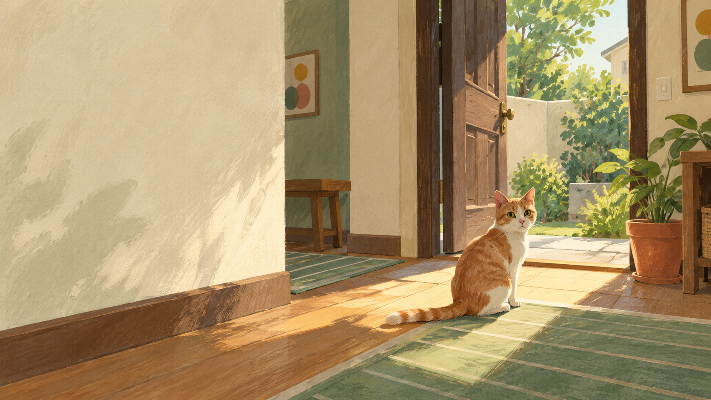
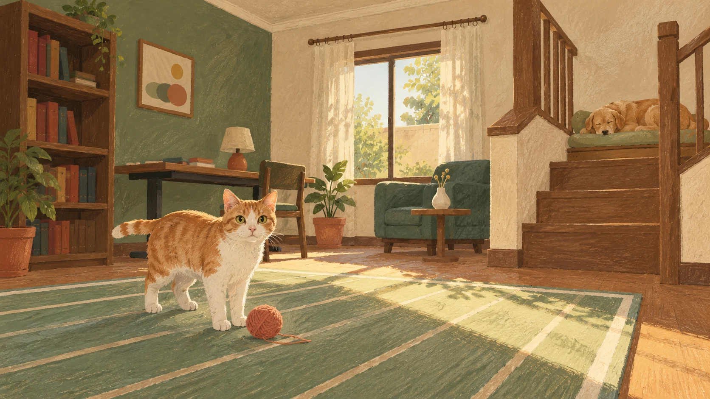

第一人称 · 叙事探索
哈基米模拟器
从一双猫的眼睛，
走进一个安静的家。
183.5 MB ZIP · 完整解压后运行 cat.exe
向下，走进故事↓MORNING LIGHT / 概念插画
01 THE HOUSE

探索 · 日常 · 解谜以游戏角色与场景为基础创作
02 THE SOUND

第一人称 · 叙事探索
从一双猫的眼睛，
走进一个安静的家。
183.5 MB ZIP · 完整解压后运行 cat.exe
